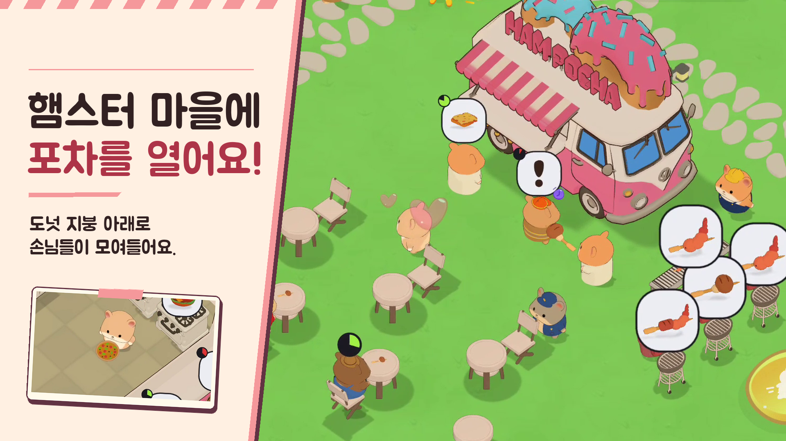
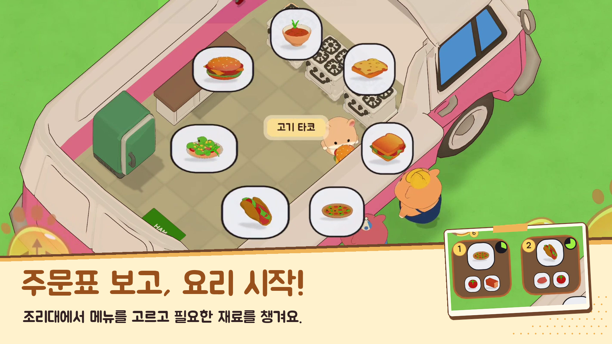
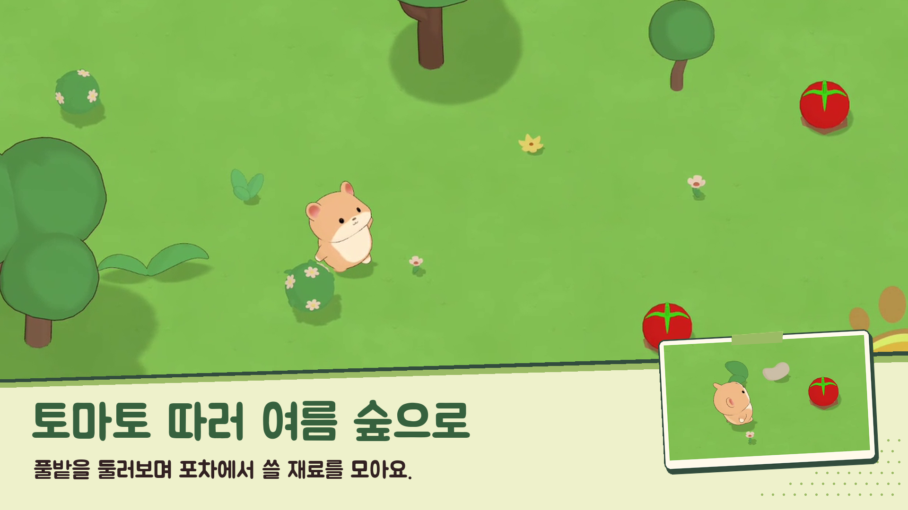
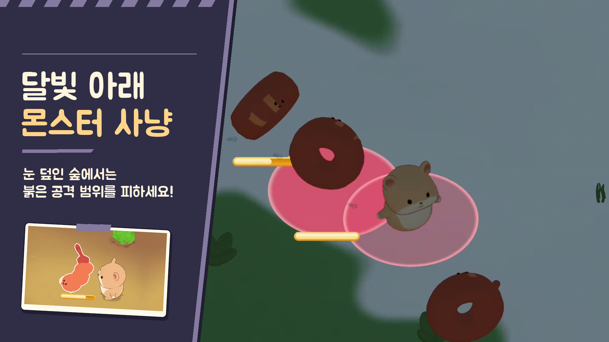
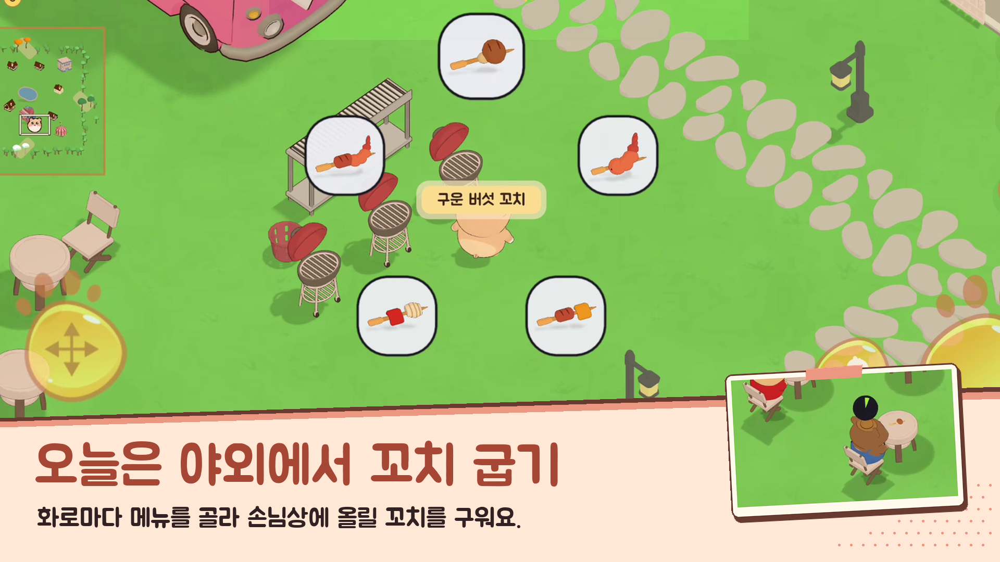
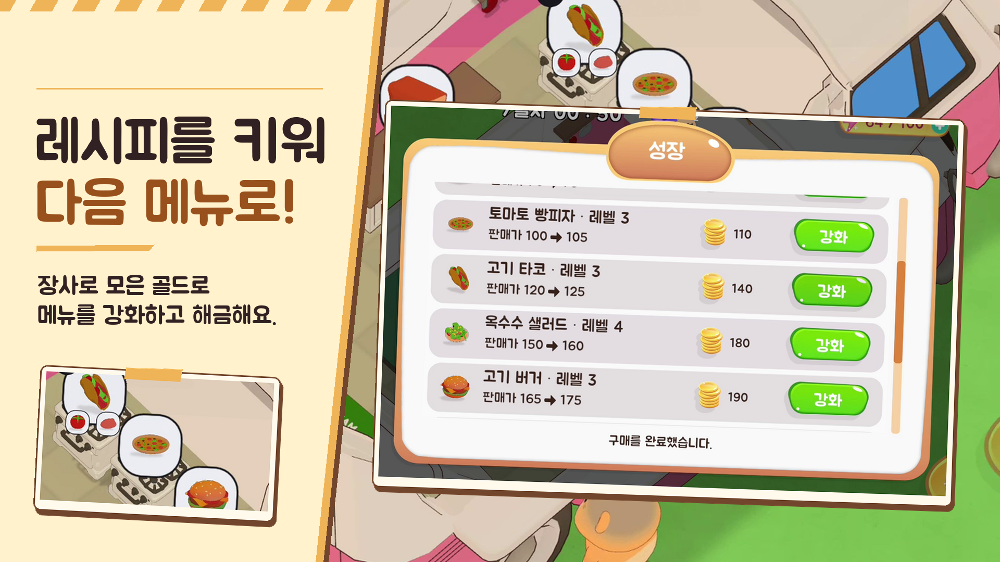
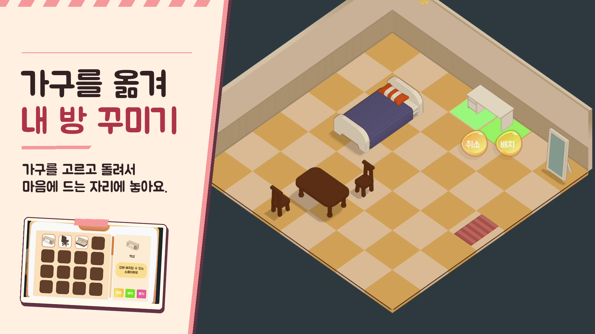
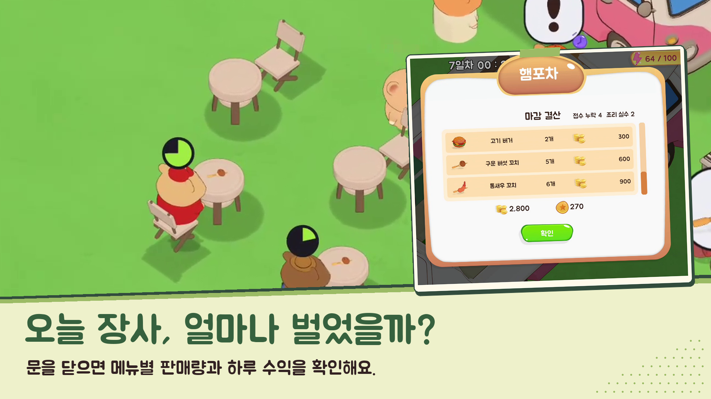

계절 숲 탐험과 재료 수집
봄부터 겨울까지 숲마다 수집할 수 있는 재료가 다릅니다. 미니맵으로 채집 대상과 출구를 확인합니다.
낮에는 몬스터가 배회하거나 도망갑니다. 밤에는 햄스터를 쫓아와 공격하므로 예고를 보고 피하거나 마을로 돌아갑니다.
01 / GAME OVERVIEW
낮에는 숲에 들어가 저녁 장사에 쓸 재료를 모읍니다.
정오부터 포차를 열어 주문을 받고, 자정이 되면 남은 주문을 마무리합니다.
장사로 번 골드와 경험치로 메뉴를 강화하고, 더 넓은 숲과 야시장을 엽니다. 밤에는 집에서 쉬며 다음 날을 준비합니다.
햄포차의 하루
02 / GAMEPLAY
영상을 불러오지 못했습니다. 잠시 뒤 다시 재생해 주세요.








영상을 불러오지 못했습니다. 잠시 뒤 다시 재생해 주세요.
03 / GAMEPLAY CONTENT
봄부터 겨울까지 숲마다 수집할 수 있는 재료가 다릅니다. 미니맵으로 채집 대상과 출구를 확인합니다.
낮에는 몬스터가 배회하거나 도망갑니다. 밤에는 햄스터를 쫓아와 공격하므로 예고를 보고 피하거나 마을로 돌아갑니다.
냉장고에 모아 둔 재료를 주문에 맞춰 조리대에 하나씩 넣습니다.
여러 조리대의 진행 상황과 손님이 기다리는 시간을 보고 어떤 주문부터 완성할지 정합니다.
완성한 음식은 한 접시씩 들고 손님에게 전달합니다.
골드를 써서 레시피를 강화하고 새 메뉴를 배웁니다. 일부 메뉴를 열면 필요한 재료가 있는 숲에도 들어갈 수 있습니다.
야시장을 열면 화로에서 꼬치를 예약할 수 있습니다. 완성된 꼬치는 자동으로 진열되고, 손님은 구매한 뒤 배정된 자리에서 먹습니다.
마을에서 집과 포차, 계절 숲을 오갑니다.
밤이 되면 주민이 집으로 돌아가고, 햄스터도 침대에서 쉬며 피로를 회복합니다.
가구 창고에서 가구를 꺼내 옮기거나 회전합니다. 벽 마감과 현관 카페트도 바꿀 수 있습니다.
04 / CORE SYSTEMS
공통 시스템은 Main 씬에 두고, 집과 마을, 숲을 필요에 따라 불러옵니다.
영업 중에는 마을과 포차 실내를 함께 유지합니다. 카메라와 조작 대상을 바꿔도 기존 조리와 손님 행동이 이어집니다.
WorldClock에서 경과 시간을 누적해 게임 시각을 계산하고, 야간 전투와 영업 마감에 같은 시계를 사용했습니다.
조리대마다 선택 메뉴, 넣은 재료, 남은 시간을 따로 보관합니다.
실내외는 냉장고 재고를 공유하고, 야외 화로는 시작과 예약 시 재료를 차감합니다.
재료, 조리 시간, 가격과 아이콘을 ScriptableObject로 관리합니다.
조리 화면과 성장 화면은 같은 콘텐츠 정의를 참조합니다.
실내 서빙 때 주문과 전달한 음식의 ID를 비교하고 정상 판매와 오배송을 구분합니다.
숲에 들어갈 때 난수 시드로 배치 후보를 만들고 구조물이 점유한 칸을 제외합니다.
필요한 칸을 확보하지 못하면 이전 배치를 복원합니다.
월드 좌표를 미니맵 좌표로 변환해 위치를 표시하고, 획득한 대상의 표식은 숨깁니다.
가구를 격자 좌표로 변환해 회전 뒤 점유할 칸이 비어 있는지 검사합니다.
너비 우선 탐색으로 입구와 침대까지 길이 이어지는지 확인한 뒤 배치를 확정합니다.
로컬 JSON 저장을 Firebase Authentication과 Cloud Firestore에 연결해 계정별 진행을 관리합니다.
저장 ID로 씬에 배치된 대상을 찾아 주문, 숲의 수집 상태, 가구 위치와 회전을 복원합니다.
영상을 불러오지 못했습니다. 잠시 뒤 다시 재생해 주세요.
05 / AI DEVELOPMENT WORKFLOW
1인 개발자로서 게임 방향과 우선순위를 정하고, AI에 조사와 대안 제시, 구현과 검사를 맡겼습니다.
작업을 요청할 때 현재 동작과 변경 범위, 유지할 조건, 완료 기준을 함께 전달했습니다.
확정된 규칙은 공통 지침에 남겼습니다.
이슈별로 AI의 제안, 채택한 방향, 실제 수정 내용과 재검증 범위를 기록했습니다.
플레이로 확인한 결과에 따라 다음 수정을 결정했습니다.
비공개 저장소에서 개발하고 승인된 파일만 공개 저장소에 자동 반영하도록 두 저장소의 역할과 승인 절차를 설계했습니다.
AI에 동기화 구축을 지시한 뒤, 초기 구현을 검토해 원본과 같은 작업 단위와 커밋 메시지를 유지하도록 기준을 바로잡았습니다.
초기 원격 권한 설정과 푸시를 직접 진행했습니다.
AI는 이 기준에 맞춰 GitHub Actions와 비교 검사를 구현했습니다. 첫 실행 실패를 수정한 뒤 공개 dev 동기화에 성공했고, 당시 승인한 31개 파일이 가림 처리한 원본과 모두 일치했습니다. 공개용 기록을 별도로 작성하는 단계도 줄였습니다.
새 소품과 건물을 등록할 때마다 격자 규격을 계산해 등록해야 했습니다.
이 작업을 자동화하도록 요청하고, 기존 도구를 먼저 확인해 재사용하며 사용 안내도 함께 갱신하도록 정했습니다.
AI는 기존 등록 창에 점유 칸과 바닥 기준점 계산, 일괄 등록을 추가했습니다. 집 입구 방향은 사람이 지정할 때까지 등록을 보류하도록 했습니다.
Unity 격리 검사에서 유효한 새 규칙 3개를 저장했고, 같은 요청을 다시 실행했을 때 추가된 규칙은 0개였습니다.
Undo 한 번으로 기존 규칙을 유지하면서 이번 추가분만 되돌렸습니다.
처음에는 기능별 대화를 직접 열고 공용 작업 메모로 기준과 진행 상태를 공유했습니다.
비교를 위해 HUD와 UI 수정은 한 대화에서 길게 이어갔습니다.
마무리 단계에는 우선순위와 작업 범위를 총괄 대화에 전달하고, 총괄이 기능별 대화를 만들어 지시를 나눴습니다.
| 비교 구간 | 모델 호출 수 | 입력 토큰 합계 | 호출당 평균 입력 |
|---|---|---|---|
| 긴 UI 대화 초반 | 20회 | 약 163만 | 8.13만 |
| 같은 UI 대화 후반 | 20회 | 약 852만 | 42.61만 |
| 직접 나눈 기능별 대화 5개의 초반 | 100회 | 약 662만 | 6.62만 |
| 총괄이 나눈 기능별 대화 5개의 초반 | 100회 | 약 844만 | 8.44만 |
긴 UI 대화의 후반 20회와 총괄이 나눈 기능별 대화의 초반 100회가 비슷한 양의 입력을 처리했습니다.
직접 나눈 기능별 대화도 초반 호출당 입력이 작았습니다. 표의 횟수는 모델 호출 기준입니다.
작업 범위와 단계가 달라 전체 토큰 절감률과 작업 시간은 따로 측정하지 않았습니다.
기능별 대화는 작업 맥락을 관리하는 데 쓰고, 총괄 대화는 우선순위와 업무 배분, 의존성을 조율하는 데 썼습니다.
같은 화면의 검수는 기존 대화에서 이어가고, 대상이 바뀌면 확정 기준과 변경 파일, 남은 검수만 넘기도록 지침을 보완했습니다.
06 / PROJECT RESOURCES